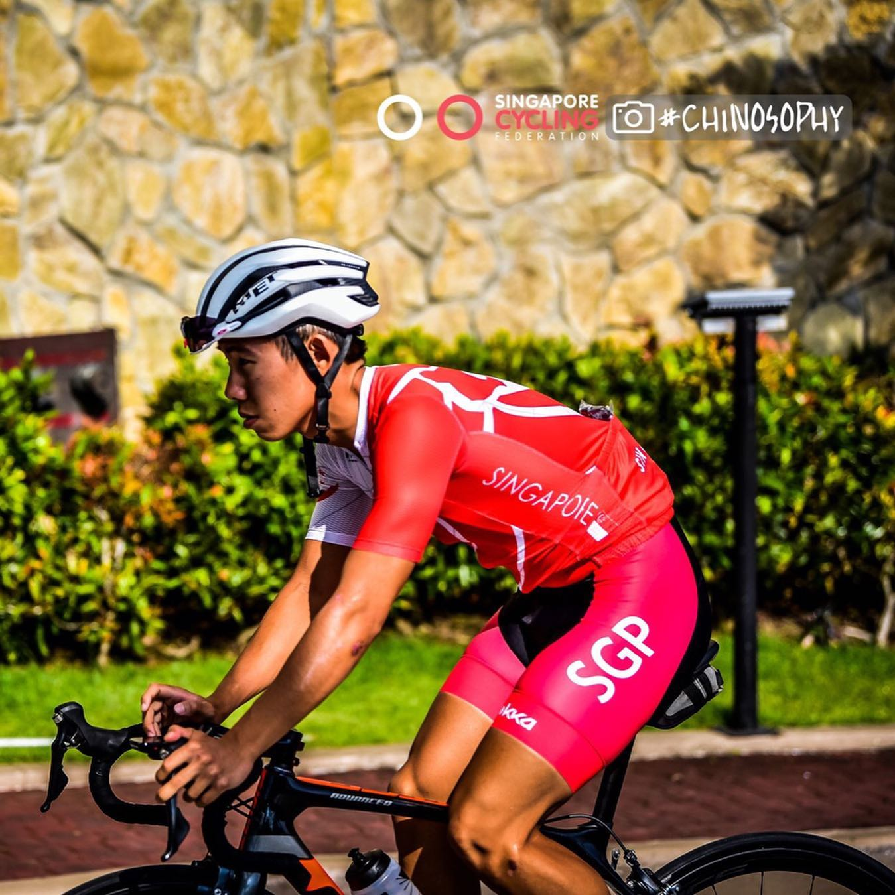
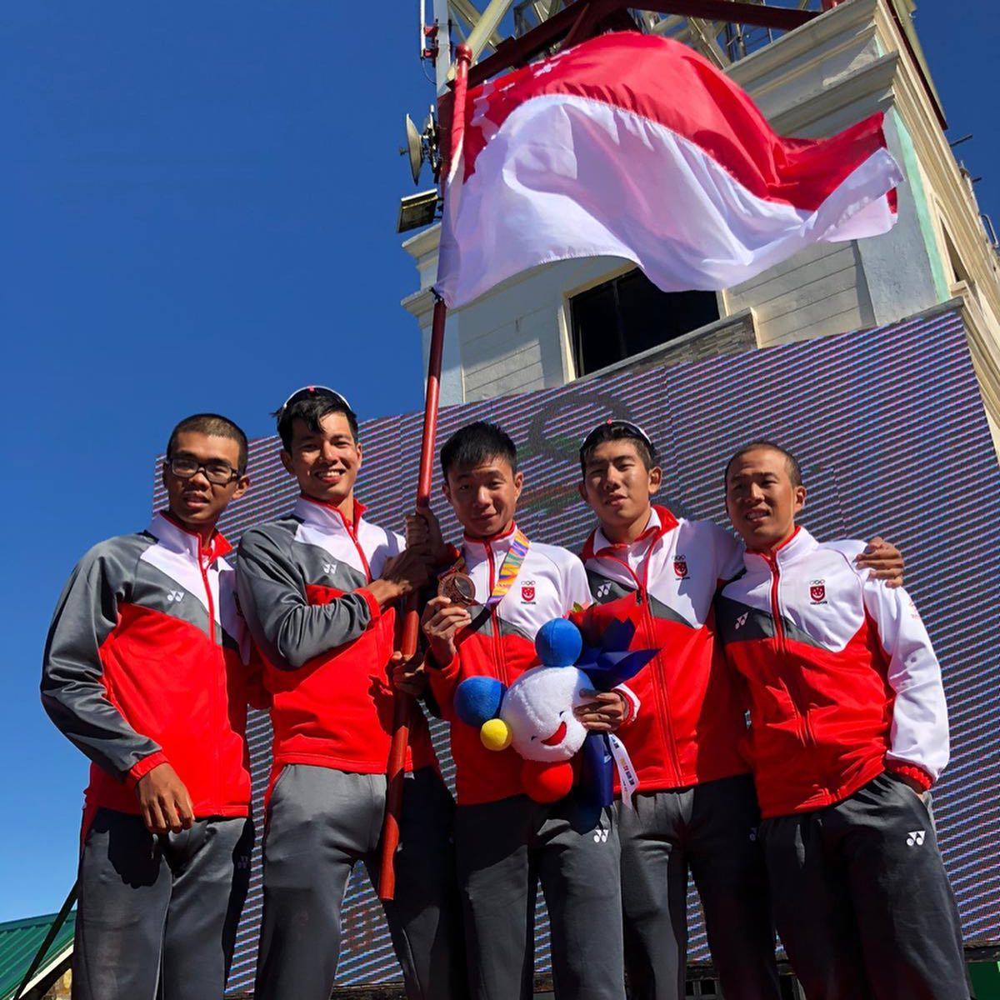
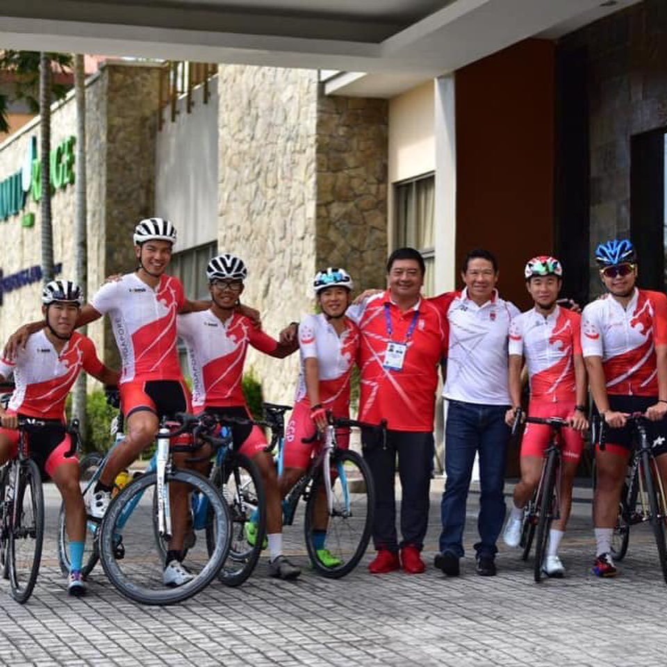
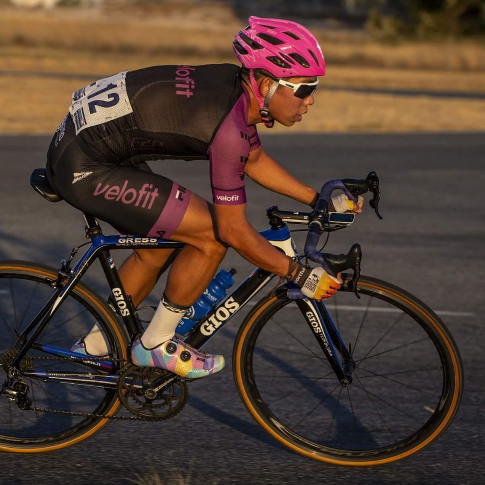
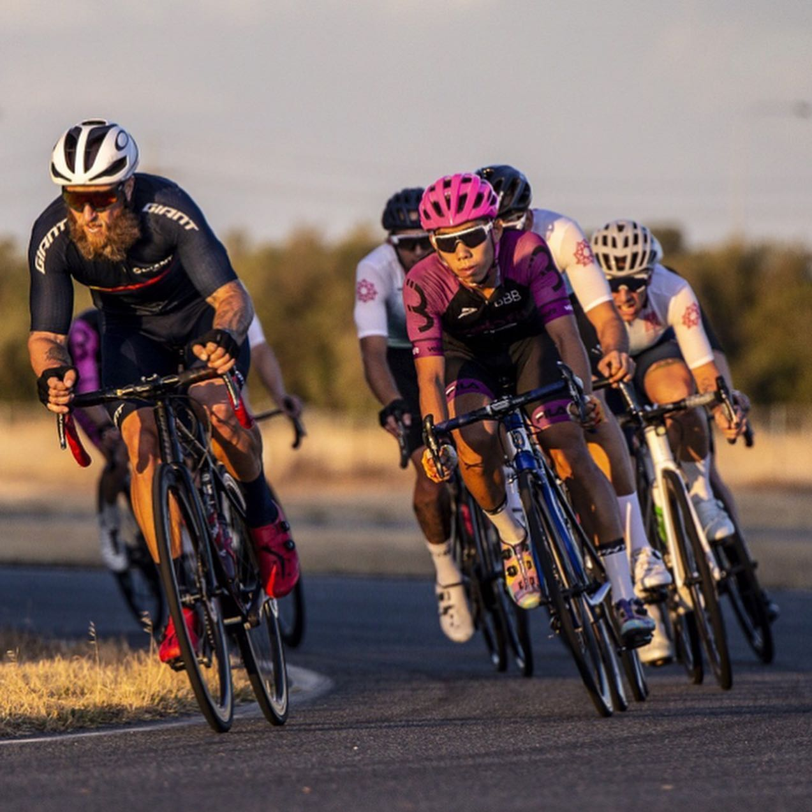
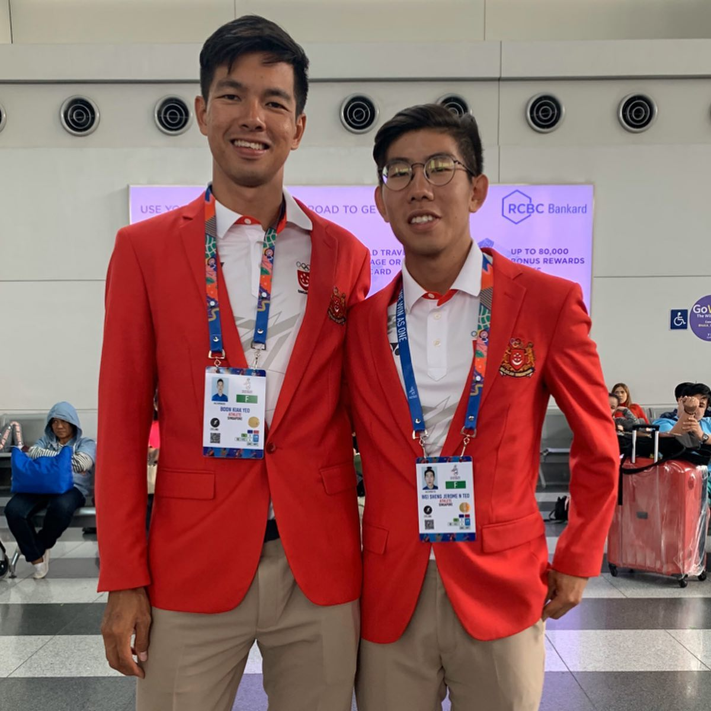
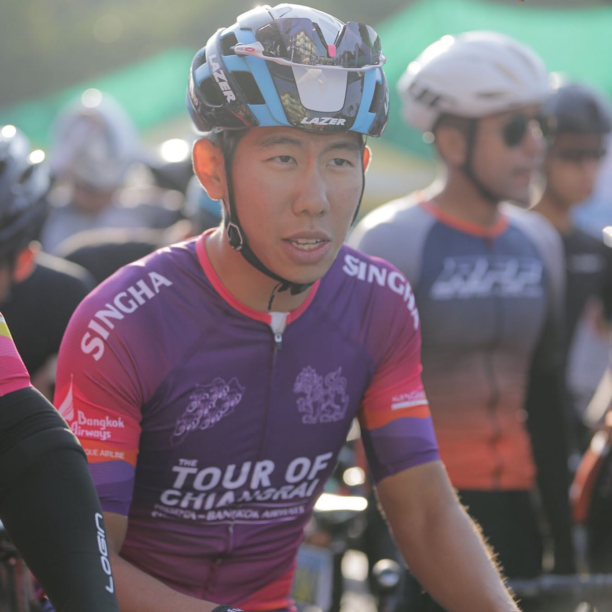
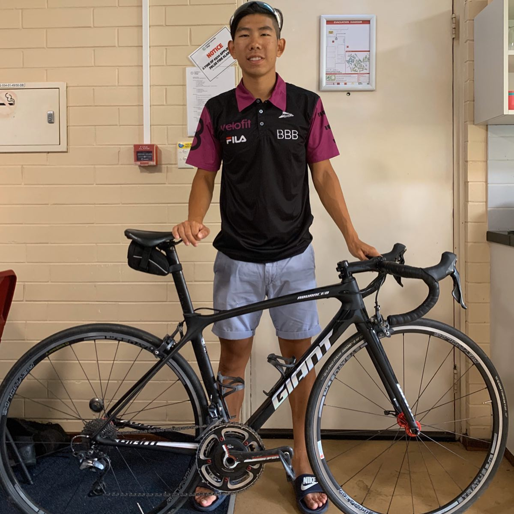
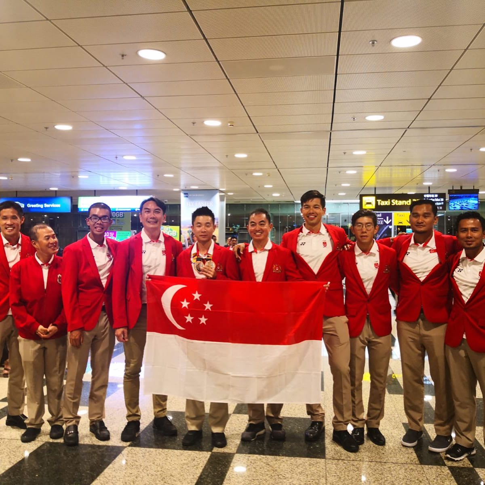

Hey everyone, I'm Jerome Teo from National Team of Singapore and this is an #AthleteTakeover! I have been part of NTS since 2018, representing Singapore in the 2019 SEA games. I currently study in Perth and ride for @velofitaustralia Men's NRS team. In this post I want to share with you what Cycling is for me and what motivates me, beyond medals and awards, to pedal crazy distances and train hard for races. Cycling started for me as a way to get active again, after tearing my shoulder playing water polo. That's actually just a nice way of saying "I was 15, fat as shit and needed to lose a heap of weight cuz girls were laughing at me." 😄 I’ve progressed quite far for the past 7 years, the laughing still hasn't stopped though... 🤔 Over the years, I’ve noted some of the best things about the beautiful sport of cycling: 1. Cycling gives us an excuse to go a bit too hard at dinner. 2. Something to do to when we feel like we went a bit too hard at dinner the night before. 3. It’s the fastest and economical way in and out of Sentosa and Johor Bahru (2 most important places for Singaporeans)😄 4. Gives you something to blame your poor local uni GPA on before moving to Australia to finish your law degree 😜 5. Bike racing gives you a sense of freedom and excitement that you just don't get anywhere else🚴🏼 6. It also pushes you mentally, and grows you as a person 💪🏼Doing a sport that requires you to dig so deep to hurt yourself, it is nothing short of character building; growing your discipline, resilience, patience, the list goes on. If you ask me, the laughs we get from the tight bibshorts we are all forced to wear, is definitely worth it 😄 I love my sport and during last 2 years I bagged Silver at 2019 u23 national championships ITT, Sprinter’s jersey winner at 2019 tour of Chiang Rai, 2nd stage 1, GC 3rd at 2018 tour de kepri This weekend I’ll be racing and sharing with you racing tips and my favourite food that keeps me going! So keep an eye on @foodbuddy posts and stories 😜 __ #cyclinglife #singaporecyclingfederation #sgathletics #singaporeathletics #seagames #cyclist #singapore #bikelife
2020-02-29 08:45:57
Back to main page